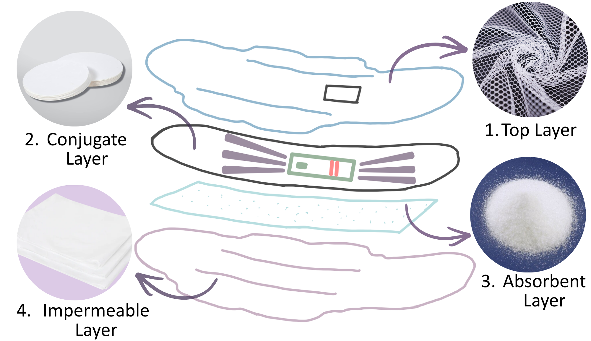
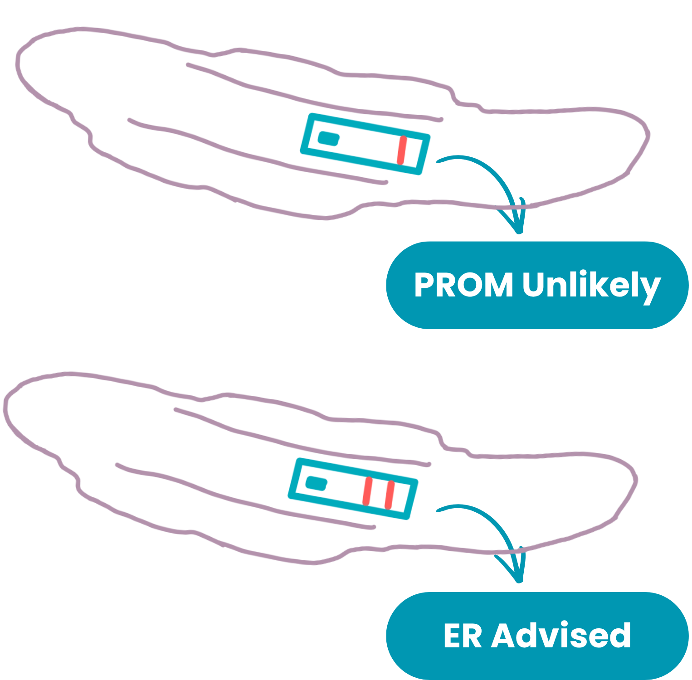

Clinical Certainty at Home
PROMPTly transforms a standard hygiene product into a powerful diagnostic tool. By integrating paper microfluidics and a lateral flow immunoassay into an absorbent pad, we provide expectant mothers with immediate clinical certainty regarding fluid leakage without requiring invasive swabs or a change in daily routine.
1. The Architecture (Layered Design)
Fluid passes through our soft upper mesh layer to enter the device. Beneath this, our conjugate layer, where our proprietary Cellulose Paper microfluidic channels take over, routing the fluid to a central embedded Lateral Flow Test Strip. Finally, a highly absorbent Sodium Polyacrylate (SAP) base layer safely absorbs any excess fluid, ensuring the diagnostic strip is never washed out or oversaturated. At the bottom, an impermeable layer of PET keeps everything contained in a nice package.

2. Fluid Dynamics & Microfluidics
Relying on capillary flow, our wedge-shaped, non-branching radial channel geometry accelerates fluid delivery directly to the testing strip. We optimized the pore radius and contact angle to ensure consistent assay activation in under two minutes, eliminating backflow and routing the sample perfectly every time.
3. The Science (PAMG-1 Biomarker)
At the center of the device lies a Lateral Flow Test (LFT). This immunoassay is specifically calibrated to detect the presence of PAMG-1, the clinical gold-standard biomarker for amniotic fluid. This biochemical validation shifts the burden of diagnosis from a patient’s intuition to a proven scientific mechanism.

Visual Readout
The display of the device is a designated viewing window integrated directly into the top of the pad. After a maximum wait time of 15 minutes, the user interprets the results using a universally recognized standard (similar to an at-home COVID-19 or pregnancy test):
- One Line (Control): The test functioned properly, but no amniotic fluid is present (Negative). The mother can safely stay home.
- Two Red Lines: Positive detection of the PAMG-1 biomarker. A clear signal to the mother that it is time to go to the hospital.

Demo Video
How our pad works to instantly diagnose fluid leakage!